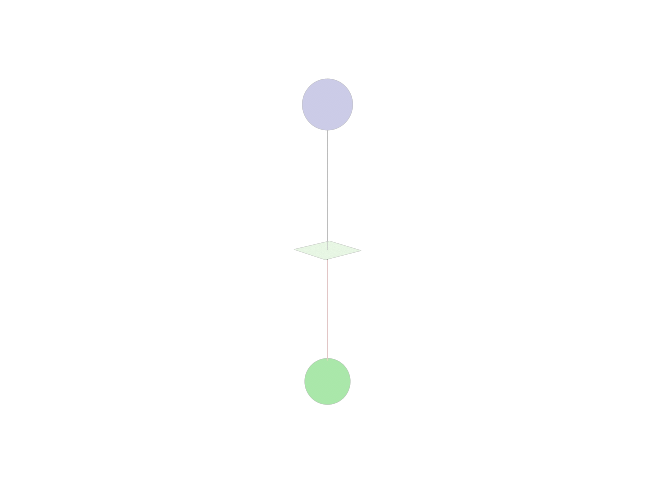

Compatibility with other Frameworks#
Type conversions#
Sionna RT is built on top of Mitsuba 3
which is based on the differentiable just-in-time compiler Dr.Jit.
For this reason, all tensors and arrays use Mitsuba data types, which themselves
are backend-dependent aliases of Dr.Jit data types. For example, if we use
Mitsuba on a CPU, the Mitsuba mi.Float data type is an alias for the Dr.Jit
data type drjit.llvm.ad.Float. This can be seen from the code snippet below:
import mitsuba as mi
import drjit as dr
# Set Mitsuba3 variant
# For details see https://mitsuba.readthedocs.io/en/stable/src/key_topics/variants.html#choosing-variants
mi.set_variant("llvm_ad_mono_polarized")
print(type(mi.Float([3])))
<class 'drjit.llvm.ad.Float'>
Note that in standard usage of Sionna RT, the Mitsuba variant is set automatically based on the available hardware.
There is generally no need to manually call mi.set_variant().
Dr.Jit arrays can exchange data with other array programming frameworks such as Numpy, Jax, TensorFlow, and PyTorch. Detailed information can be found in the Dr.Jit Documentation.
Whenever possible, conversions between frameworks use a zero-copy strategy relying on DLPack. That means that no additional memory is required and tensors are just exposed as a different type.
Conversion from Dr.Jit to other frameworks is as simple as calling the following methods on a Dr.Jit array:
# Note that the desired framework(s) need(s) to be installed for
# the following code to work.
x = mi.Float([1,2,3])
print(type(x.numpy()))
print(type(x.jax()))
print(type(x.tf()))
print(type(x.torch()))
<class 'numpy.ndarray'>
<class 'jaxlib.xla_extension.ArrayImpl'>
<class 'tensorflow.python.framework.ops.EagerTensor'>
<class 'torch.Tensor'>
The inverse direction is even simpler:
import torch
a = torch.ones([3, 6], dtype=torch.float32)
a_dr = mi.TensorXf(a)
print(a_dr)
[[1, 1, 1, 1, 1, 1],
[1, 1, 1, 1, 1, 1],
[1, 1, 1, 1, 1, 1]]
Gradients#
It is possible to exchange gradients between Dr.Jit and other frameworks with automatic gradient computation. This can be achieved with the help of the @dr.wrap decorator.
The following code snippet shows how a function written in Dr.Jit can be exposed as if it was implemented in PyTorch:
a = torch.ones([3, 6], dtype=torch.float32, requires_grad=True)
@dr.wrap(source="torch", target="drjit")
def fun(a):
return dr.sum(dr.abs(a)**2)
b = fun(a)
b.backward()
print(a.grad)
tensor([[2., 2., 2., 2., 2., 2.],
[2., 2., 2., 2., 2., 2.],
[2., 2., 2., 2., 2., 2.]])
Similarly, one can use a function written in PyTorch in the context of a larger program implemented in Dr.Jit, as shown below:
a = dr.ones(mi.TensorXf, [3, 6])
dr.enable_grad(a)
@dr.wrap(source="drjit", target="torch")
def fun(a):
return torch.sum(torch.abs(a)**2)
b = fun(a)
dr.backward(b)
print(a.grad)
[[2, 2, 2, 2, 2, 2],
[2, 2, 2, 2, 2, 2],
[2, 2, 2, 2, 2, 2]]
The @dr.wrap decorator supports also other frameworks such as Jax. Please check the documentation of the latest version of Dr.Jit to see what is possible.
Training-Loop in PyTorch#
{kind=link}

Fig. 9 Transmitter and receiver separated by a blocking wall#
The following code snippet shows how one can implement a gradient-based optimization loop in PyTorch affecting radio material properties in Sionna RT. In this example, we have a transmitter and receiver that are separated by a blocking wall. Only a single refracted path connects both. The goal is to optimize the thickness and conductivity of the wall such that the received signal strength is maximized. Obviously, this happens when the wall is removed, i.e., it has a thickness of zero. For any nonzero thickness, the conductivity should be made as small as possible to increase the energy of the refracted field.
import torch
import numpy as np
import sionna.rt
from sionna.rt import load_scene, PlanarArray, Transmitter, Receiver, \
PathSolver, RadioMaterial, cpx_abs_square
# Load scene and place TX/RX
scene = load_scene(sionna.rt.scene.simple_reflector, merge_shapes=False)
scene.tx_array = PlanarArray(num_cols=1, num_rows=1,
pattern="iso", polarization="V")
scene.rx_array = scene.tx_array
scene.add(Transmitter("tx", position=[0,0,3]))
scene.add(Receiver("rx", position=[0,0,-3]))
# Create custom radio material and assign it to reflector
my_mat = RadioMaterial(name="my_mat",
conductivity=0.1,
thickness=0.1,
relative_permittivity=2.1)
scene.get("reflector").radio_material = my_mat
# Wrap path computation function within a PyTorch context
p_solver = PathSolver()
p_solver.loop_mode = "evaluated" # Needed for gradient compuation
@dr.wrap(source="torch", target="drjit")
def compute_paths(thickness, conductivity):
# Avoid negative values of thickness and conductivity
my_mat.thickness = dr.select(thickness.array<0, 0, thickness.array)
my_mat.conductivity = dr.select(conductivity.array<0, 0, conductivity.array)
paths = p_solver(scene, refraction=True)
gain = dr.sum(dr.sum(cpx_abs_square(paths.a)))
return gain
# PyTorch training loop maximizing the path gain
conductivity = torch.tensor(0.1, requires_grad=True)
thickness = torch.tensor(0.2, requires_grad=True)
optimizer = torch.optim.Adam([thickness, conductivity], lr=0.05)
num_steps = 10
for step in range(num_steps):
loss = -compute_paths(thickness, conductivity)
optimizer.zero_grad()
loss.backward()
optimizer.step()
if step in [0, num_steps-1]:
print("Step: ", step)
print("Path gain (dB): ", 10*np.log10(-loss.detach().numpy()))
print("Thickness: ", my_mat.thickness[0])
print("Conductivity: ", my_mat.conductivity[0])
print("------------------------------------\n")
Step: 0
Path gain (dB): -81.59713
Thickness: 0.15265434980392456
Conductivity: 0.05138068273663521
------------------------------------
Step: 9
Path gain (dB): -58.89217
Thickness: 0.0
Conductivity: 0.0
------------------------------------